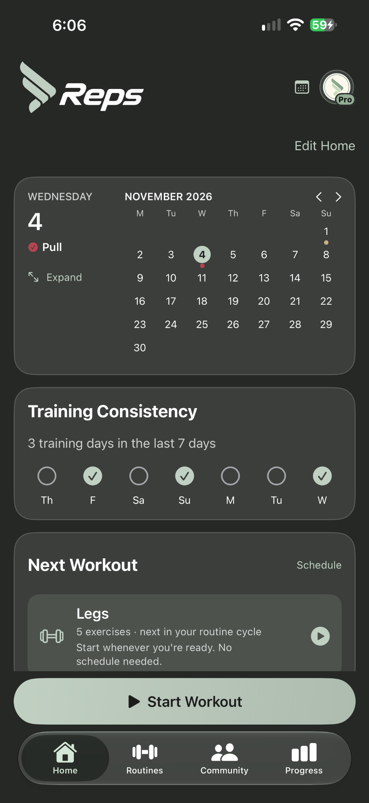
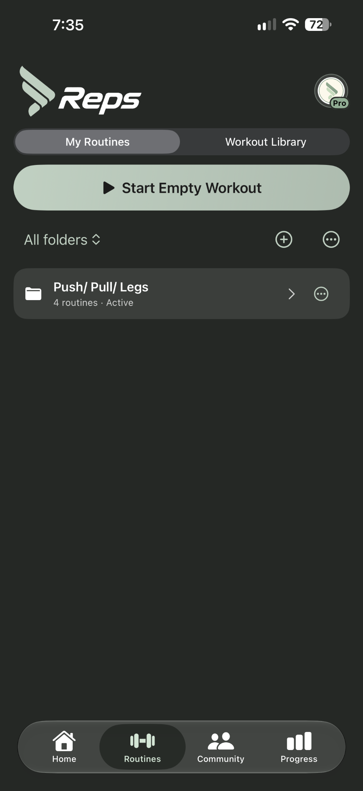
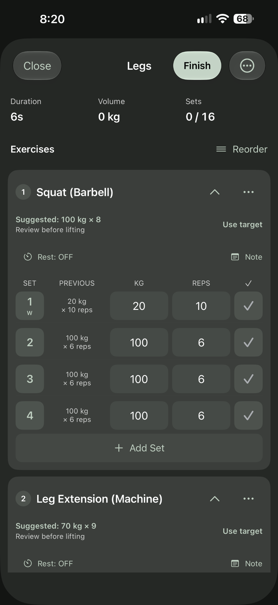
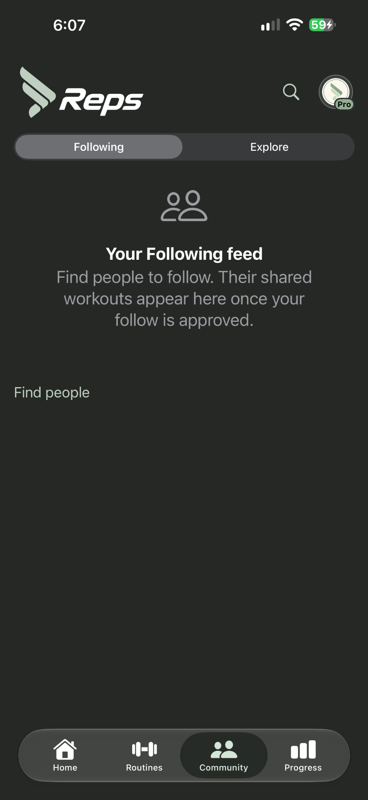
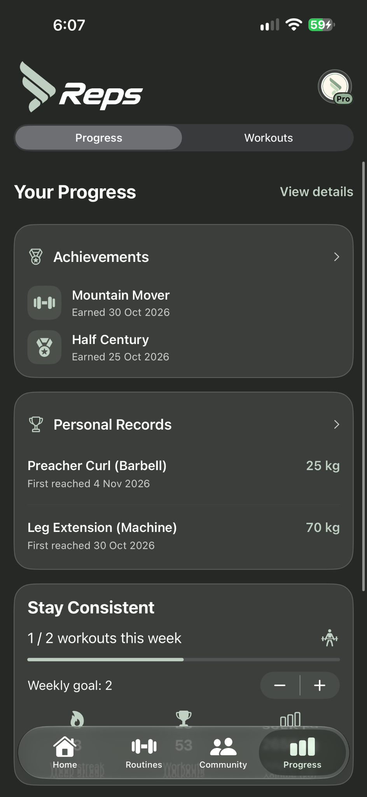

Workouts & routines
Log weights, sets and reps. Build routines and keep your sessions organised. Optional iCloud sync restores routines and workout history across devices using the same Apple/iCloud account.
Train with purpose. Track every set, stay consistent and see how far you've come — all in one place.
Workout tracking · Progress insights · Community

Reps gives you the tools that matter, without getting between you and your workout.
Log weights, sets and reps. Build routines and keep your sessions organised. Optional iCloud sync restores routines and workout history across devices using the same Apple/iCloud account.
See personal records, achievements and training consistency in one place.
Follow other lifters, share workouts and discover routines worth trying.
Keep workout media and replay moments from your training.
A look inside the actual Reps iPhone app. Swipe across the screenshots to explore.





Everything you love about Reps, with more control over your training, your progress and your experience.
Look deeper into lift and routine performance, training trends and areas worth reviewing.
Explore progression tools, multi-week planning and equipment profiles to organise your training.
Choose from eight colour themes, customise workout colours and tailor your app's look.
See training progress, weekly goals, your calendar, last workout and routine shortcuts.
Compare progress photos and measurements, and use the calorie calculator.
Create training reminders with your own schedules and notification sounds.
Reps includes workout logging, routines, personal records, achievements, workout media, Replay and Community. Pro adds the premium tools above.
A$4.99/month or A$49.99/year
Planned Australian pricing. Final prices appear in the app before purchase. Subscriptions renew automatically unless cancelled in App Store settings. TestFlight purchases are not charged.
Need help with workouts, your account, privacy or the Reps Community? Get in touch directly.
getrepsapp@gmail.comReady for a clearer picture of your training?
The beta opens after Apple approves the build. TestFlight is required.